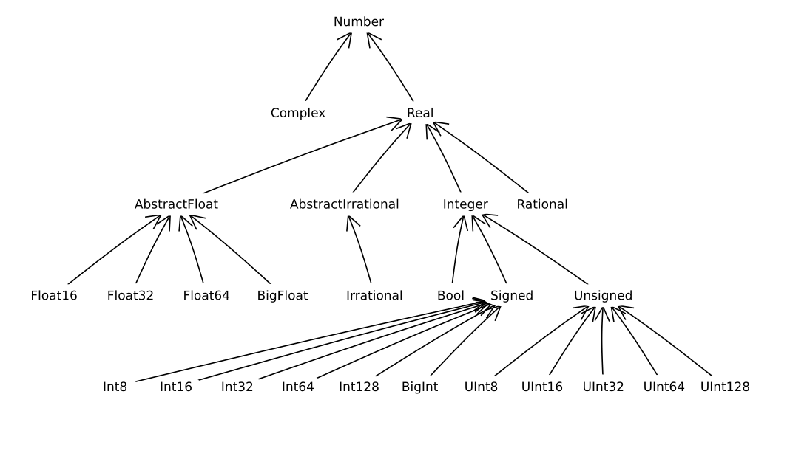
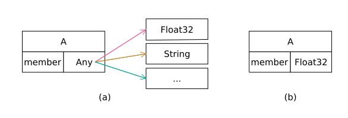
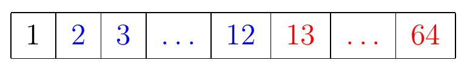
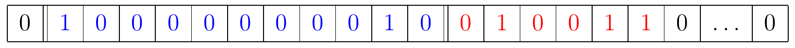
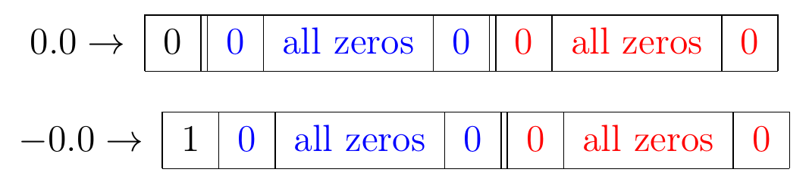
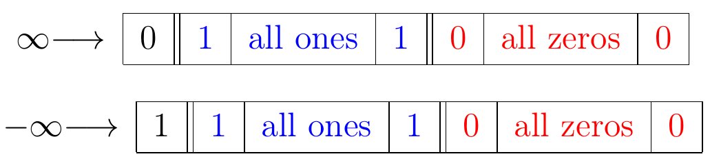

数据类型
类型是Julia语言的核心。尽管在语法上不需要显式地定义数据的类型，但Julia在编译过程中会对类型进行推断。Julia语言有预定义的类型。用户也可以定义自己的类型。有些类型可以通过参数进行修改。
数据种类
通常，动态类型编程语言没有开发良好的类型系统，如Python中的数据类型就是非强制的。Julia类型系统是动态的，但总是在对象实例化时进行推断。这样，Julia在执行代码段或对代码进行即时(JIT)编译之前，数据类型就是已知的了。简而言之，Julia原生支持在使用前定义或推断任意对象或字面量的数据类型。在深入介绍数据类型之前，让我们先了解一下Julia对数据的分类：变量、常量和字面量的知识。
变量
Julia中的变量将名称与值关联起来。名称通常以字母开头的字母数字表示。下面给出了一些在Julia中变量名的例子。
julia> abc = 11julia> πi = 3030julia> a1 = 11julia> 1abc = 2ERROR: syntax: "1" is not a valid function argument name around REPL[4]:1julia> sin = 1.01.0julia> cos(0.0)1.0julia> cos = 0.0ERROR: cannot assign a value to variable Base.cos from module Main
从上面的结果可以看出，变量名可以包含Unicode字符；可以包含数字，但不能以数字开头；以函数名做为变量名时要特别慎重。变量名的另外一个限制是不能使用特殊字符和Julia的关键字，如下面的例程所示。
julia> a@ = 1
ERROR: syntax: extra token "@" after end of expression
julia> struct = 10
ERROR: syntax: unexpected "="Julia的关键字很少。
baremodule begin break catch const continue
do else elseif end export false
finally for function global if import
let local macro module quote return
struct true try using while Julia还具有两字关键字(mutable struct、abstract type等)和中缀操作符(in、isa等)关键字。
定义与初始化
大部分静态语言，如C，变量的定义和初始化是独立的。定义声明变量的类型，其底层操作是向内存申请一块相应类型的地址空间并命名（变量名）。初始化则在地址空间中存入规定类型的具体值。变量和值的关系是：变量是主体，值是变量的附属。如下面C代码片段所示。
int i; /* 将i定义为整数类型 */
i = 10; /* 初始化i */
int j = 20; /* 在一条语句中定义并初始化变量 */Julia则将变量和值的关系翻转过来：值是主体，变量是值的附属。大多数Julia变量是在对类型进行初始化时定义的。事实上，类型是作为初始化过程的一部分赋给变量的。也可以显式地声明变量将要绑定的值的类型，Julia会尝试将值转换成相应的类型，不成功则会报错。对于REPL中的全局变量，不允许声明变量的类型。例程如下所示。
julia> a = 11julia> typeof(a)Int64julia> a = 1.01.0julia> typeof(a)Float64julia> let a::Int = 1.0 println(typeof(a)) endInt64julia> let a::Int = 1.1 println(typeof(a)) endERROR: InexactError: Int64(1.1)julia> a::Int = 1ERROR: syntax: type declarations on global variables are not yet supported
从上面的介绍可以判断，Julia中的一般变量是没有固定地址的，事实也是如此。Julia甚至没有为我们开放变量地址的查询功能（后面会介绍可查询地址的变量类型），这一切都交给了底层程序自动处理。在Julia中，没有初始化的变量是无效的（后面会介绍例外的情况）:
julia> iERROR: UndefVarError: i not defined
常量
常量可以看作是不能修改的变量。然而，Julia并没有严格地遵循常量不变的条件。在类型不变的情况下修改常量的值，它会发出警告，但改变常量类型的情况是不允许的。
julia> const ICONSTANT = 11julia> ICONSTANT = 5WARNING: redefinition of constant ICONSTANT. This may fail, cause incorrect answers, or produce other errors. 5julia> ICONSTANT = 5.0ERROR: invalid redefinition of constant ICONSTANT
在使用中，尽管常量的值是可以修改的，但我们应该严格遵守常量不变的特性，以避免程序在执行中产生不可预见的错误。
字面量
字面量是表示一个值的常表达式。因为它们出现在变量定义的右边，因此常被称为右首值。它们也是一个值的本质表示形式。下面是一些不同类型的字面表达式。
julia> 2 # Integer2julia> 2.0 # Double precision Float (Float64)2.0julia> 2f0 # Single precision Float (Float32)2.0f0julia> 'a' # Char'a': ASCII/Unicode U+0061 (category Ll: Letter, lowercase)julia> "string" # String"string"
当我们深入研究类型时，我们将根据特定类型的上下文含义更详细地回顾字面量。通常，变量初始化为var = <literals>。
内置数据类型
Julia语言自身定义了许多内置类型。而更多的类型则是在Julia库中定义的。Julia语言提供了扩展这些功能的灵活性。此外，定义的类型不作为保留的关键字存在。下面是该语言中一些常用的类型。
Nothing
Nothing是值nothing的类型。
julia> typeof(nothing)Nothing
typeof函数可用于查询值所属类型的信息。当代码中确实需要未初始化的变量条件时，可以使用nothing来初始化这个变量。
julia> a = nothingjulia> i = 66julia> if i < 5 a = 5 endjulia> typeof(a)Nothing
这里，如果i小于5 a就被赋值为5。否则，它仍保持未初始化。Nothing和nothing在函数参数和返回类型中也被广泛使用。
数值类型
下面是在Julia中定义为数值数据类型的一些数据类型。
Bool
true和false在Julia中属于Bool类型。数值上，true的值为1,false的值为0。
整数
整型数字类型分为具有不同字节大小的无符号和有符号类型。有符号数字类型有:Int8、Int16、Int32、Int64和Int128。对应的无符号数字类型分别为:UInt8、UInt16、UInt32、UInt64和UInt128。
julia> typeof(1)Int64
数字字面量的默认数值类型是Int，根据机器的体系结构，它映射到Int32或Int64。
对于无符号数字，字面量由0<表示说明符><数字>指定。
julia> typeof(0b1), typeof(0o7), typeof(0xff)(UInt8, UInt8, UInt8)
这些由二进制、八进制和十六进制表示的数字都被映射到UInt8。数字的尺寸由满足字面量所需的最小字节大小决定。
julia> typeof(0xf), typeof(0xfff),typeof(0xfffff), typeof(0xfffffffff), typeof(0xfffffffffffffffff)(UInt8, UInt16, UInt32, UInt64, UInt128)
无符号整数的前面也是可以加+/-号的，但加-号的含义不是得到一个负的整数，而是得到该整数的二进制补码（后续将介绍相关知识）。
julia> -0x20xfejulia> Int(ans)254
浮点数
根据IEEE 754规范，Julia使用Float16、Float32和Float64来表示半精度、单精度和双精度浮点数。使用字面量f和e作为Float32和Float64的指数分隔符。
julia> typeof(1.0), typeof(1e0),typeof(1.e4)(Float64, Float64, Float64)julia> typeof(1.0f0), typeof(1f-6), typeof(1.f4)(Float32, Float32, Float32)
抽象类型
Julia中的类型可以从抽象类型派生出来。大多数面向对象语言将这种关系视为在类层次结构中描述对象的一种方法。在Julia中，抽象类型仅仅是像接口一样的概念性表示，内部没有数据元素。
julia> abstract type MyAbstractType endjulia> struct MyConcreteType <: MyAbstractType member endjulia> a = MyConcreteType(5)Main.MyConcreteType(5)julia> a isa MyAbstractTypetrue
虽然我们将在后面详细讨论这个概念，但类型只能从一个抽象类型派生出来。中缀运算符isa用于判断特定对象是否属于特定类型。这里类型可以是具体类型也可以是抽象类型。下面是Julia中数字类型的类型层次结构。

基本类型
基本类型是使用固定字节数表示数据的一种具体类型。基本类型的经典例子是整数和浮点数。与大多数语言不同，除了一组固定的内置类型外，Julia允许声明自己的基本类型。实际上，Julia的基本类型都是在语言本身中定义的:
primitive type Float16 <: AbstractFloat 16 end
primitive type Float32 <: AbstractFloat 32 end
primitive type Float64 <: AbstractFloat 64 end
primitive type Bool <: Integer 8 end
primitive type Char <: AbstractChar 32 end
primitive type Int8 <: Signed 8 end
primitive type UInt8 <: Unsigned 8 end
primitive type Int16 <: Signed 16 end
primitive type UInt16 <: Unsigned 16 end
primitive type Int32 <: Signed 32 end
primitive type UInt32 <: Unsigned 32 end
primitive type Int64 <: Signed 64 end
primitive type UInt64 <: Unsigned 64 end
primitive type Int128 <: Signed 128 end
primitive type UInt128 <: Unsigned 128 end声明基本类型的一般语法是:
primitive type «name» «bits» end
primitive type «name» <: «supertype» «bits» end虽然用户可以定义自己的基本类型，但建议只有在现有的基本类型不能满足要求时再定义新的基本类型。相同位值的基本类型本质上是不可互换的，也不能无缝转换。类型层次结构在这类类型的行为中扮演着重要的角色。
julia> UInt32(3f-1)ERROR: InexactError: UInt32(0.3)
尽管它们都是32位实体，但单精度浮点数不能在每种情况下都表示为无符号整数。不能创建任意大小位的基本类型，目前仅支持8位倍数的位大小。
julia> primitive type MyType1 40 endjulia> primitive type MyType2 4 endERROR: invalid number of bits in primitive type MyType2
位类型
Julia可以在二进制接口层面上与编译完成的语言，如C/C++、FORTRAN等进行无缝地交互，得益于Julia中定义的某些数据类型同这些本地编译语言所使用的类型在二进制布局中是一致的。这种类型被称为位类型。Julia中的基本类型都是位类型的数据类型。某些复合数据类型也是位类型。我们将在遇到他们时进一步讨论。位类型可以通过在实例上调用isbits函数或在类型上调用isbitstype函数进行查询。
julia> a = 1010julia> isbits(a)truejulia> isbitstype(Int)true
有理数和复数
虽然有理数和复数是数字类型，但它们不是基本类型。它们是使用复合数据类型创建的，我们将把复合数据类型作为用户定义类型的一部分来介绍。
字符
Char是由32位值表示的字符。它是Unicode字符的一个有效UCS-4表示。我们将在String一章详细讨论Char及其与String的关系。AbstractChar抽象类型可方便用户开发自己的类Char数据类型。
字符串
字符串是字符的集合。虽然大多数字符串是由Unicode字符编码组成的，但它们也可以存储其他类型的二进制数据。AbstractString抽象类型方便用户定义自己的字符串类型。
用户定义类型
虽然Julia提供了相当多的内置类型，但仍需要将各种属性组合在一起的数据类型。
结构
Julia用struct表示一旦被初始化，其内部属性就不能被修改的自定义复合类型。
julia> struct Rectangle h::Float64 w::Float64 endjulia> r = Rectangle(10.0, 20.0)Main.Rectangle(10.0, 20.0)julia> r.h = 15ERROR: setfield! immutable struct of type Rectangle cannot be changed
Rectangle是一个struct，初始化值为10.0和20.0。属性值不能被修改。函数Rectangle(10.0, 20.0)用来执行初始化。它是一个特殊的函数。当我们讨论函数和方法时，将进行深入介绍。
可变结构
假设我们需要Rectangle是可修改的，则可以创建一个可变结构，如下所示:
julia> mutable struct MRectangle h::Float64 w::Float64 endjulia> mr = MRectangle(10.0, 20.0)Main.MRectangle(10.0, 20.0)julia> mr.h = 15.015.0julia> mrMain.MRectangle(15.0, 20.0)
可以看到，属性值在实例化对象之后是可以被修改的。Julia中的复合数据类型也可以从抽象类型派生出来。
julia> abstract type Shape endjulia> struct Rectangle <: Shape w::Float64 h::Float64 endjulia> struct Square <: Shape l::Float64 end
成员
Julia中的复合类型具有成员属性，但没有成员函数或方法。Julia的多分派体系结构使函数的行为类似于特定类型的方法，但它们与面向对象语言中的方法不同。有一类特殊的函数，它可以是类型的成员。这些函数被称为构造函数。我们将在讨论函数时详细讨论构造函数。成员的类型信息并不总是在复合类型中被指定。
julia> mutable struct A member endjulia> a = A(5)Main.A(5)julia> typeof(a.member)Int64julia> a1 = A("string")Main.A("string")julia> typeof(a1.member)String
Any
虽然在前面的例子中，模糊性问题在对对象进行实例化时得到了解决，但我们永远不能确定动态成员属性未来将被赋予哪种数据类型。
julia> a.member = "julia""julia"julia> typeof(a.member)String
a.member之前的类型是Int64，现在是String。Julia假定这种未指明的类型为Any。在不能确定类型的情况下，Julia将假定类型为Any。从性能的角度来看，使用Any是不可取的。每次访问Any类型的对象时，它都会重定向到另一个实际的对象。我们不可能事先知道Any对象的大小。实际上，它是一个指向内存中实际对象所在的另一个位置的指针:

参数数据类型
Any作为类型会引入不必要的跳转，因此效率很低。有时，类型不一定会影响算法，但会引入不同的数据位大小。例如，前面介绍的Rational数据类型，分子和分母可以是任何整数类型，如Int8、Int16、Int32、Int64或Int128。Rational数据类型的定义如下:
julia> struct Rational{T<:Integer} <: Real num::T den::T end
两个属性num和den的类型为T，其中T是Integer的子类型。Rational是Real的一个子类型。以下是参数数据类型的一些特性。
julia> Rational{Any}ERROR: TypeError: in Rational, in T, expected T<:Integer, got Type{Any}julia> Rational{Int32} <: Rationaltruejulia> Rational{Int32} <: Rational{Integer}false
理解这种行为尤其重要。尽管Int32是Integer的子类型，但参数表示Rational{Int32}不是Rational{Integer}的子类型。然而，Rational{Int32}是Rational的子类型。
julia> a = Rational{Int32}(1,UInt32(2))1//2julia> typeof(a.num), typeof(a.den)(Int32, Int32)julia> b = Rational{Integer}(1,UInt32(2))1//0x0000000000000002julia> typeof(b.num), typeof(b.den)(Int64, UInt64)
与具体数据类型一样，抽象数据类型也可以参数化。
julia> abstract type Shape{T<:AbstractFloat} endjulia> struct Rectangle{T<:AbstractFloat} <: Shape{T} w::T h::T endjulia> struct Square{T<:AbstractFloat} <: Shape{T} s::T end
根据上面的方案，针对T可以开发不同的功能，如将T设为Float32或Float64，构建的Rectangle{Float32}类型与Rectangle{Float64}类型完全不同，它们是在编译过程中实例化具体类型时生成的。
类型的参数化是Julia语言一个非常有用的特性，除此以外，也可以对整数值进行参数化。
julia> struct Point{T<:AbstractFloat,N} x::Vector{T} endjulia> num_coor(::Point{T,N}) where {T<:AbstractFloat,N} = Nnum_coor (generic function with 1 method)julia> p2 = Point{Float32,2}([1f0,2f0])Main.Point{Float32, 2}(Float32[1.0, 2.0])julia> p3 = Point{Float32,3}([1f0,2f0,3f0])Main.Point{Float32, 3}(Float32[1.0, 2.0, 3.0])julia> num_coor(p2)2julia> num_coor(p3)3julia> push!(p2.x,3)3-element Vector{Float32}: 1.0 2.0 3.0julia> p2Main.Point{Float32, 2}(Float32[1.0, 2.0, 3.0])julia> num_coor(p2)2
可以看出，类型中使用的N是用作类型参数的整数。
类型上的运算
某些操作适用于类型。在前面，我们已经看到了一些，本节将详细介绍它们。
typeof
此函数提供与类型的实例相关联的具体类型。
julia> a = 1 // 21//2julia> typeof(a)Rational{Int64}
类型本身也有类型，它们都是DataType类型的实例。
julia> typeof(Int)DataTypejulia> typeof(Any)DataTypejulia> typeof(DataType)DataType
别名
与任何其他实例对象一样，类型可以进行比较和赋值。下面是来自base/boot.jl的代码片段。
if Int === Int64
const UInt = UInt64
else
const UInt = UInt32
endInt对象与Int64对象进行比较，如果相同则UInt初始化为UInt64，否则初始化为UInt32。因此根据机器架构，UInt成为UInt64或UInt32的别名。
isa
判断实例是否属于特定类型。isa也可以用作中缀运算符。
julia> isa(1,Number)truejulia> isa(1,Matrix)falsejulia> isa(1,Int)truejulia> "julia" isa Stringtrue
supertype
这个函数返回一个类型的直接超类型。
julia> supertype(Int32)Signed
>:用于指定（在结构或函数定义阶段）或判断一个类是否是另一个类的超类。
julia> Integer >: UInt8truejulia> Float64 >: Float16false
<:
此操作符用于表示一个类型是否是另一个类型的子类型。
julia> Int32 <: Integertruejulia> Int32 <: AbstractFloatfalsejulia> Int32 <: Realtruejulia> Int32 <: Signedtrue
打印数据类型
在定义了复杂的数据类型后，常需要以有意义的方式表示数据。默认情况下，所有成员都将作为元组打印。
julia> struct A a1::Int32 a2::Float64 endjulia> a = A(1,2)Main.A(1, 2.0)
其次，数据经常打印在REPL上。要禁止在REPL上打印数据，可以用分号(;)结束语句。
julia> a;julia> aMain.A(1, 2.0)
默认情况下，Nothing不会标记输出。
julia> nothing
show
默认情况下，为了在REPL上显示输出，会在数据类型上调用相关的show方法。
julia> struct A a1::Int32 a2::Float64 endjulia> a = A(1, 2)Main.A(1, 2.0)julia> function Base.show(io::IO, a::A) println(io, "a1: ", a.a1, " a2: ", a.a2) endjulia> aa1: 1 a2: 2.0
show用于在任何类型的输出设备上显示数据，而print只能用于输出文本信息。如果没有引入特定的打印例程，则在调用print时在内部使用show。
julia> print(a)a1: 1 a2: 2.0
string
此函数可用于将任何类型转换为其字符串表示形式。当没有提供适当的转换方法时，将在内部调用print函数以获取数据类型的文本表示。
julia> string(a)"a1: 1 a2: 2.0\n"
在前面的代码中可以清楚地看到print或底层show的用法。而字符串中额外的行尾则归因于println的使用，它向语句添加了一个EOL。如果想去掉它，只需要将show中的println换为print即可。
julia> function Base.show(io::IO, a::A) print(io, "a1: ", a.a1, " a2: ", a.a2) endjulia> string(a)"a1: 1 a2: 2.0"
数字在计算机中的存储与运算
在Julia中，如果你输入$(\sqrt3)^2$，结果将是2.9....96，其中9重复了15次。相比与传统的数学运算，计算机的运算方式有两个明显且本质的区别:
计算机只能表示有限数量的数字;
计算机中表示的数字只能有有限多个有效数字。
因此，能够在计算机中精确表示的数字只是有理数的一个子集。每当计算机执行一个运算，当结果不是一个可以在计算机中精确表示的数字时，就会用一个近似值来代替这个数字。这被称为舍入误差：用计算机进行实数计算时产生的错误。
实数的浮点表示方法
下面是在计算机中表示实数的一般模型：
\[x=s(.a_1a_2...a_{t})_{\beta}\times\beta^{e} \tag{1}\]
其中
\[\begin{align*} s & → x=±1 的符号 \\[2ex] e & → 指数，范围为L≤e≤U \\[2ex] (.a_1... a_{t})_{\beta} & = \dfrac{a_1}{\beta}+\dfrac{a_2}{\beta^2}+\cdots+\dfrac{a_t}{\beta^t}；尾数 \\[2ex] β & → 基数 \\[2ex] t & → 有效数字个数；精度 \end{align*}\]
在浮点表示法(1)中，如果我们以这样一种方式指定$e$，即$a_1≠ 0$，那么表示将是唯一的。这称为规格化的浮点表示法。例如，如果$β = 10$，在规格化的浮点数中，我们将把$0.012$写成$0.12 × 10^{−1}$，而不是$0.012 × 10^0$或$0.0012 × 10^1$。
在当今大多数计算机中，基数是$β = 2$。过去老式的IBM大型机中曾使用过基数8和16。一些手持计算器使用基数10。莫斯科国立大学开发的Setun计算机，使用的基数是3，但并没有得到广泛推广。
对于$s$，$β$，$t$，$e$的值，在一般浮点模型(1)中有多种选择。IEEE 64位浮点表示是当今大多数计算机中使用的特定模型：
\[x=(-1)^s(1.a_2a_3... a_{53})_2 2^{e-1023} \tag{2}\]
注意在方程(1)和(2)中$s$的不同表现形式。在(2)中，$s$为0或1。$s = 0$，$x$是正的；$s = 1$, $x$是负的。
由于$β = 2$，在$x$的规格化浮点表示中，小数点后的第一个(非零)位必然是1。因此我们不需要存储这个数字。这就是为什么在(2)中我们把$x$写成从1开始的小数。即使精度是$t = 52$，我们也能够访问到第53位有效数字$a_{53}$。
指数的范围是:$0≤e≤2047$。稍后会讨论2047的来源。但首先，我们讨论一下为什么在(2)表示法中我们用$e - 1023$作为指数，而不是简单地用$e$(在(1)表示法中)作为指数。如果最小的可能指数是$e = 0$，那么计算机能生成的最小正数将是$(1.00…0)_2 = 1$：当然，我们需要计算机来表示小于1的数字！这就是为什么我们在表示(2)中使用称为有偏指数的移位表达式$e - 1023$。注意，有偏指数的范围是$- 1023≤e - 1023≤1024$。
下图说明了计算机的物理位如何与上面的表示相对应。下表中编号为1到64的每个单元对应于计算机内存中的物理位。

第一位是符号位：它存储$s$的值，0或1。
蓝色的2到12位存储指数$e$(不是$e−1023$)。使用11位，可以生成从$0$到$2^{11}−1 = 2047$的整数。下面是如何得到$e$的最小值和最大值：
\[e=(00...0)_2=0 \\[1ex] e=(11...1)_2 =2^0+2^1+...+2^{10}=\dfrac{2^{11}-1}{2-1}=2047\]
- 红色的52位，存储有效数字$a_2$到$a_{53}$。
例1：求10.375的浮点表示形式。
解： 通过计算 $10=0\times2^0+\textcolor{blue}{1}× 2^1 + \textcolor{green}{0}\times2^2+\textcolor{red}{1}\times2^3$ 和 $0.375=0\times2^{-1}+\textcolor{blue}{1}\times2^{-2}+\textcolor{green}{1}\times2^{-3}$ 可以得到 $10=(\textcolor{red}{1}\textcolor{green}{0}\textcolor{blue}{1}0)_2$ 和 $0.375=(.0\textcolor{blue}{1}\textcolor{green}{1})_2$。最终得到：
\[10.375=(1010.011)_2=(1.010011)_2\times2^3\]
式中$(1.010011)_2 × 2^3$为该数字的规格化的浮点表示。现在我们将其改写为式(2)的表示形式：
\[10.375=(-1)^0(1.010011)_2\times2^{1026-1023}\]
由于$1026 =(10000000010)_2$，按位表示的最终结果为：

注意因为数字是正数，第一个符号位是0。接下来的11位(蓝色)代表指数$e = 1026$，下一组红色的位是尾数，尾数的最末一位有效数字以后用0填充。在Julia中，我们可以通过输入bitstring(10.375)来逐位表示：
julia> bitstring(10.375)"0100000000100100110000000000000000000000000000000000000000000000"
特殊情况：0，无穷，非数
在浮点算术中有两个零：$+0.0$和$−0.0$，它们有特殊的表示。在表示0时，所有的指数位和尾数位都设置为0。符号位是0的代表$+0.0$，1的代表$−0.0$：

当指数位设置为0时，我们有$e = 0$，因此$e−1023 =−1023$。这种将所有指数位设置为零的情况，是为$±0.0$和非规格化数字保留的。非规格化数用来表示靠近0的数或0。
下面是计算机中正负无穷数的表示方法：

当指数位全设置为1时，我们有$e = 2047$，因此$e−1023 = 1024$。这种安排是专门为$±∞$以及其他特殊值，如NaN(非数)保留的；当尾数等于0时表示无穷大，尾数不等于0时表示非数。
综上所述，尽管(2)中的$−1023≤e−1023≤1024$，但在表示非零实数时，我们只能访问$−1022≤e−1023≤1023$的指数范围。
因此，计算机可以表示的最小正实数（非规格化）为：
\[x=(-1)^0(0.00...1)_2\times2^{-1022}=2^{-52}\times2^{-1022}=5.0\times10^{-324}\]
最大正实数（规格化）为：
\[x=(-1)^0(1.11...1)_2\times2^{1023}=\left(1+\dfrac{1}{2}+\dfrac{1}{2^2}+...+\dfrac{1}{2^{52}} \right)\times2^{1023}=(2-2^{-52})\times2^{1023}≈0.18\times10^{309}\]
在计算过程中，如果得到一个小于最小浮点数的数字，则会产生下溢错误。大于最大值的数字会产生上溢错误。
Julia中上溢和下溢错误分别是正负无穷：
julia> nextfloat((2.0-2^(-52))*2.0^1023)Infjulia> prevfloat(-(2.0-2^(-52))*2.0^1023)-Inf
其运算方式与水银式温度计类似。
整数的表示方法
在前一节中，我们讨论了计算机中实数的表示方法。这里我们将简要讨论整数的表示方法。计算机如何表示整数$n$？与实数类似，我们以2为基数开始写$n$。我们有64位来表示它的有效数字和符号。与浮点数一样，我们为符号分配一位，将其余的63位用于有效数字。当对整数进行加法运算时，这种方法有一些缺点。另一种方法被称为二进制补码，它更常用，包括在Julia中。
举个例子，假设我们的计算机是8位的。要用二进制补码表示12(或任何正整数)，只需将它写成以2为基数展开的形式：$(00001100)_2$。为了表示−12，我们做如下操作：翻转所有数位，用0替换1，用1替换0，然后在结果上加1。翻转数字12，我们得到$(11110011)_2$，加上1（二进制）得到$(11110100)_2$。因此，−12在二进制补码法中被表示为$(11110100)_2$。为了表示-12，费了那么大的功夫，感觉有点奇怪，但当把12和-12二进制表示相加时，这种表示方法的优势立刻显现：
\[(00001100)_2+(11110100)_2=(\textcolor{red}{1}00000000)_2\]
这个和的前8位(从右到左)，也就是计算机能表示的(忽略红色数字1)，是$(00000000)_2$。所以就像以10为基数的$12 +(- 12)= 0$一样，这些数的表示形式的和也是0。
我们可以用Julia实现64位的计算。函数bitstring输出一个整数的数位，对于负数使用二进制补码：
julia> bitstring(12)"0000000000000000000000000000000000000000000000000000000000001100"julia> bitstring(-12)"1111111111111111111111111111111111111111111111111111111111110100"
你可以验证当截断到64位时，这些表示的和为0。
下面是另一个说明二进制补码优点的例子。考虑−3和5的表现，
\[-3=(11111101)_2 和 5 =(00000101)_2\]
−3和5的和是2；那么它们表示形式的二进制和呢？我们有：
\[(11111101)_2+(00000101)_2=(\textcolor{red}{1}00000010)_2\]
如果我们忽略红色的第9位，结果是$(10)_2$，结果也确实是2。注意，如果我们遵循浮点表示中使用的相同方法，并将最左边的位分配给整数的符号，就不会有这个属性。
还记得对无符号整数取负的例子吧，它实际上返回的就是原整数的二进制补码。
julia> 0xc0x0cjulia> -0xc0xf4
在二进制补码中，使用64位，可以表示$−2^{63} =−9223372036854775808$和$2^{63}−1 =9223372036854775807$之间的整数。小于或大于这个范围的任何整数都会产生下溢或上溢错误。
整数的溢出与浮点数有所不同，如下所示：
julia> typemax(Int64)9223372036854775807julia> typemin(Int64)-9223372036854775808julia> typemax(Int64) + 1-9223372036854775808julia> typemin(Int64) - 19223372036854775807
当获得一个超过最大（或最小）可能值的整数时，Julia绕到最小（或最大）的整数，并继续计算。其运算方法与指针式钟表完全一样。